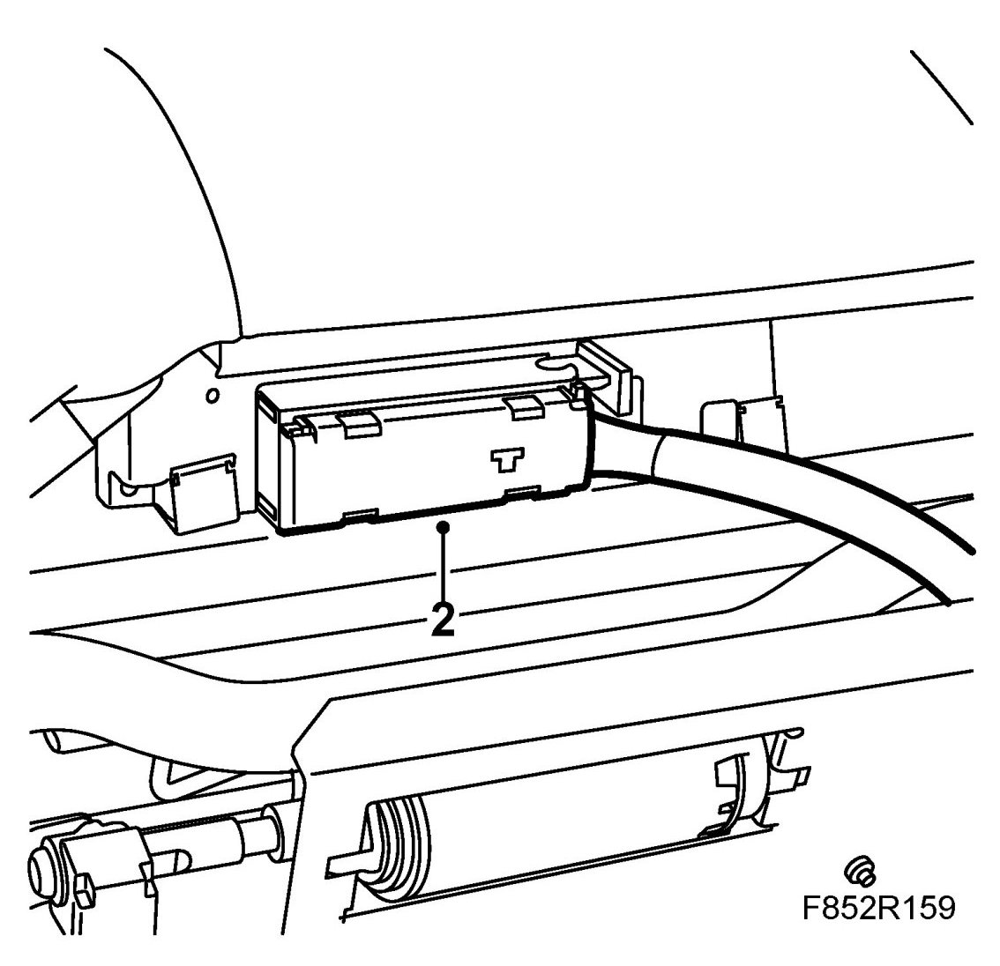
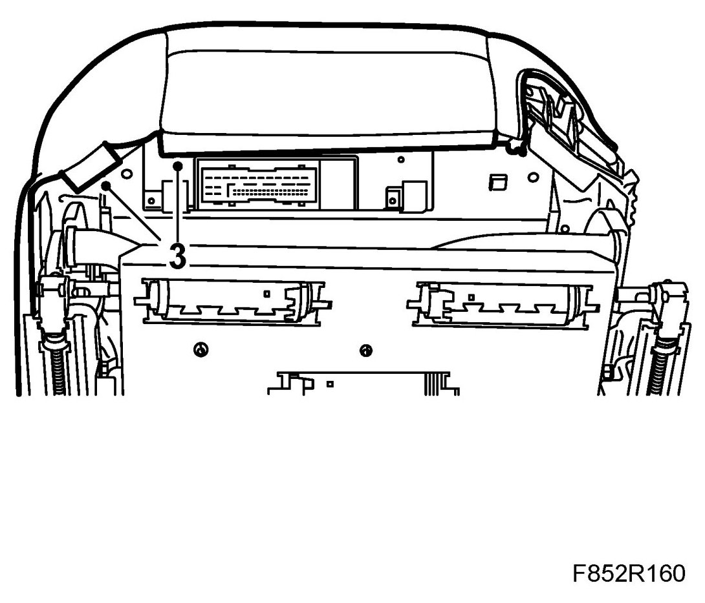
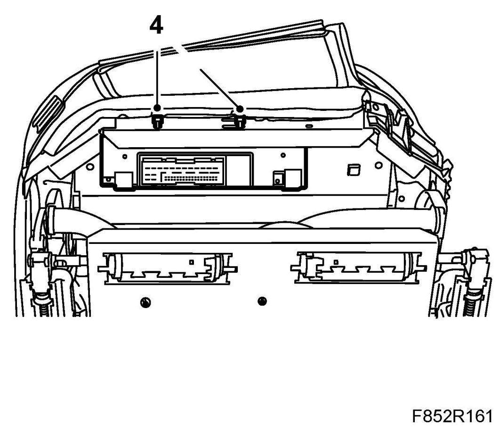
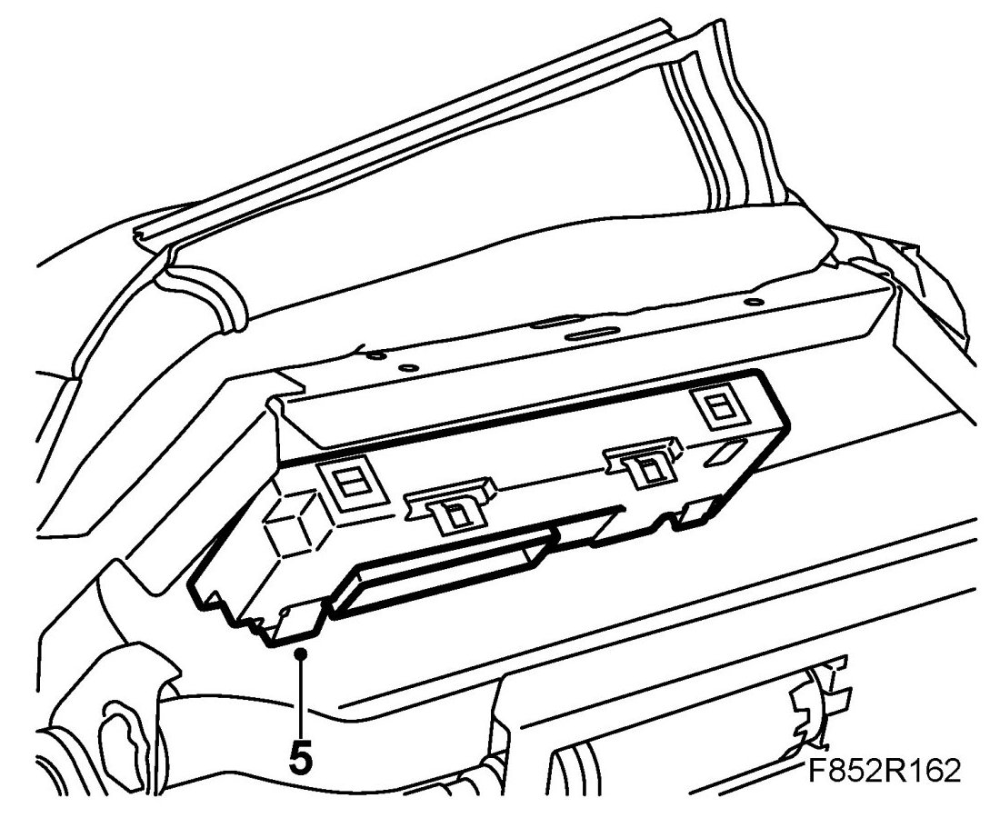
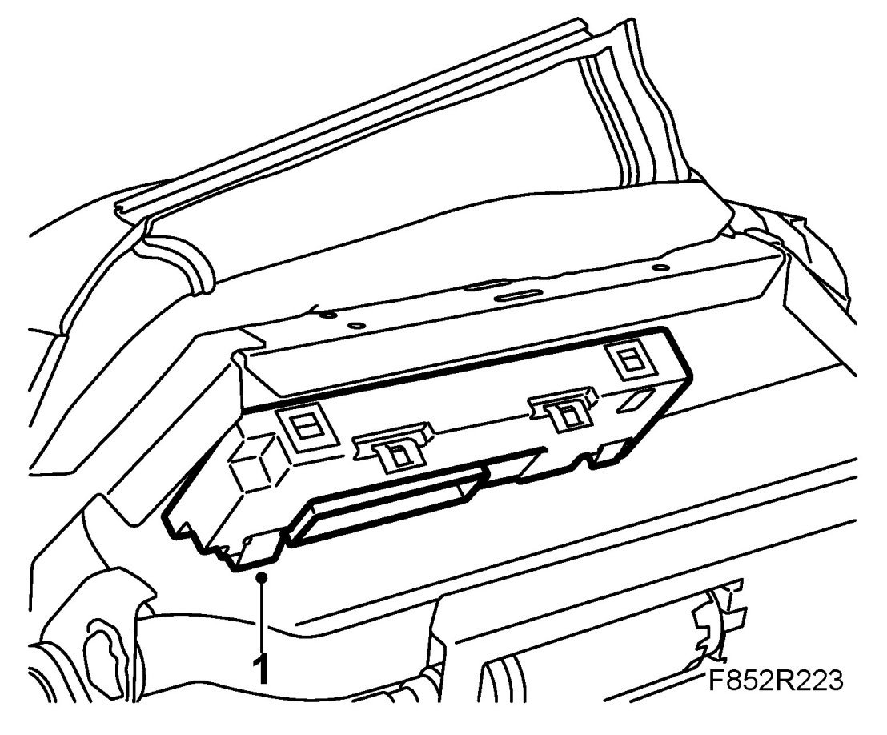
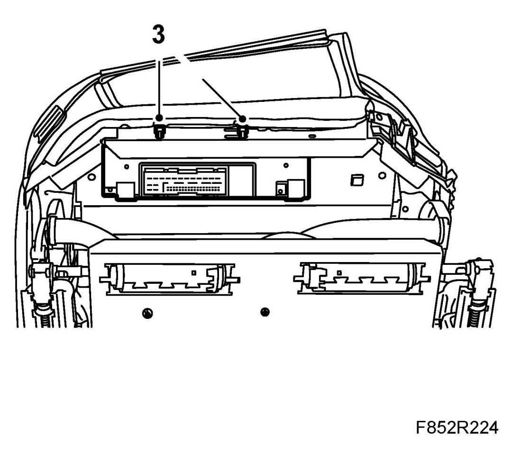
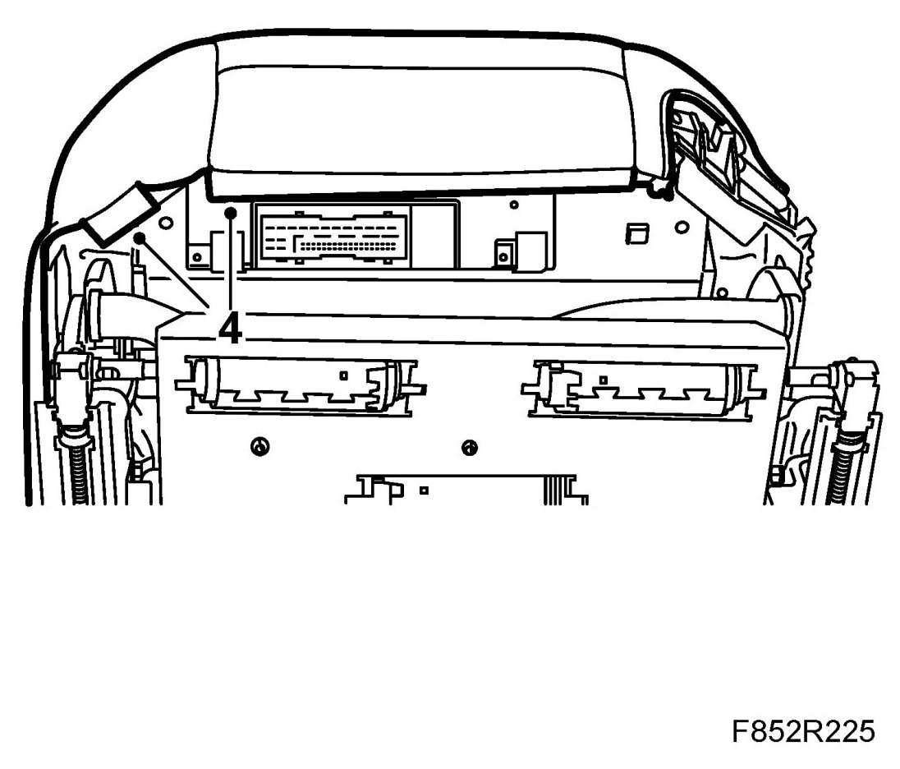
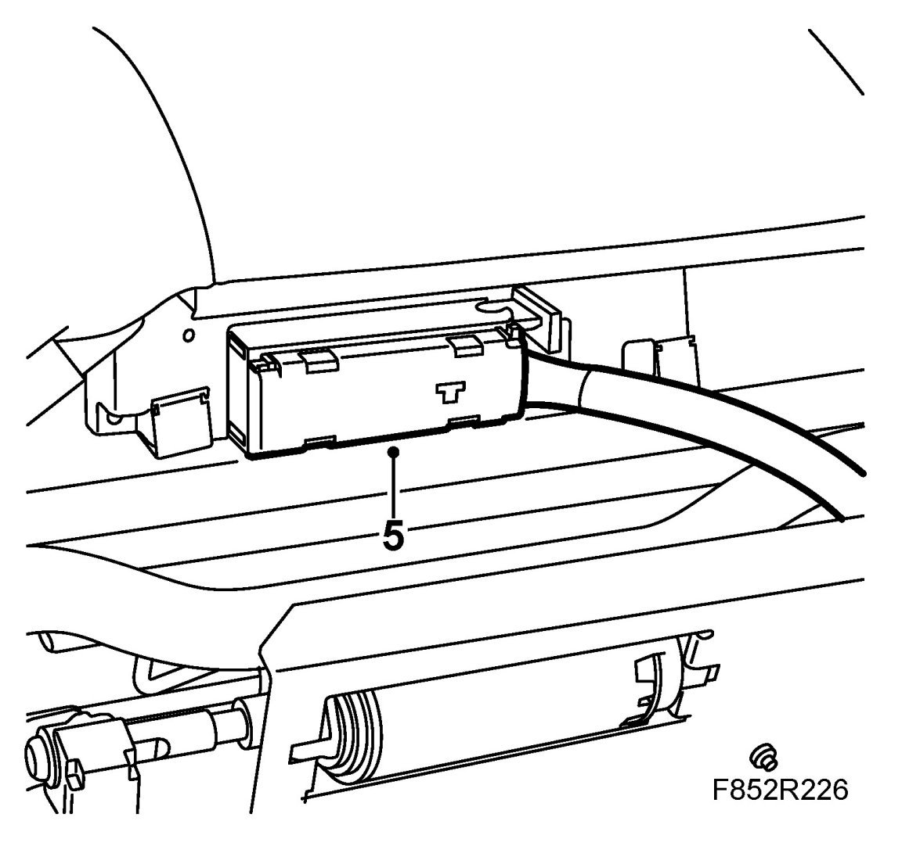

DSM And PSM Control Module, CV
DSM And PSM Control Module, CV
To remove
Carry out measures before dismantling the control module.
1. Move seat to its highest position.
IMPORTANT: Take care when releasing the locking mechanism on the connector so as not to damage the connector. Pull the halves straight apart to avoid bending the pins. For further information regarding connectors, refer to Connectors, handling and inspection.
2. Disconnect the connector from the control module.

3. Remove the upholstery from the seat front edge.

4. Remove the cable tie.

5. Push the control module back so that it detaches.

To fit
1. Move the control module forwards into the clamps.

2. Push the control module back and twist up to the mounting position.
3. Fit the cable tie to the control module front edge.

4. Fit the seat front edge upholstery.

IMPORTANT: Take care when plugging in the connector so as not to damage or press out the pins/sleeves in the connector. For further information regarding connectors, refer to Connectors, handling and inspection.
5. Connect the control module connector.

Perform the procedure after changing a control module.